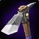

Mineração
Coleta- O que mudou
- Veio de Tório Pesado, só no Monte Hyjal, e a Barra de Azerótio, nova. As Calças de Fundição (dropam nas Minas Mortas) cortam 25% do tempo pra fundir cobre, estanho, bronze e prata.
- Como upar (1 a 300)
- Cobre na zona inicial até 65; Vale Gris e Sertões; Arathi e Desolação; Tanaris e Azshara; no fim mitril, veraprata e tório. Fundir dá ponto até 185.
- Como fazer ouro
- Minerar e vender minério e barras no leilão. Custo zero; as barras de fim de jogo entram no conjunto da Ferraria e na munição.
- Combina com
- Ferraria e Engenharia
- Na fogueira
- Magnetita: Poder de Ataque